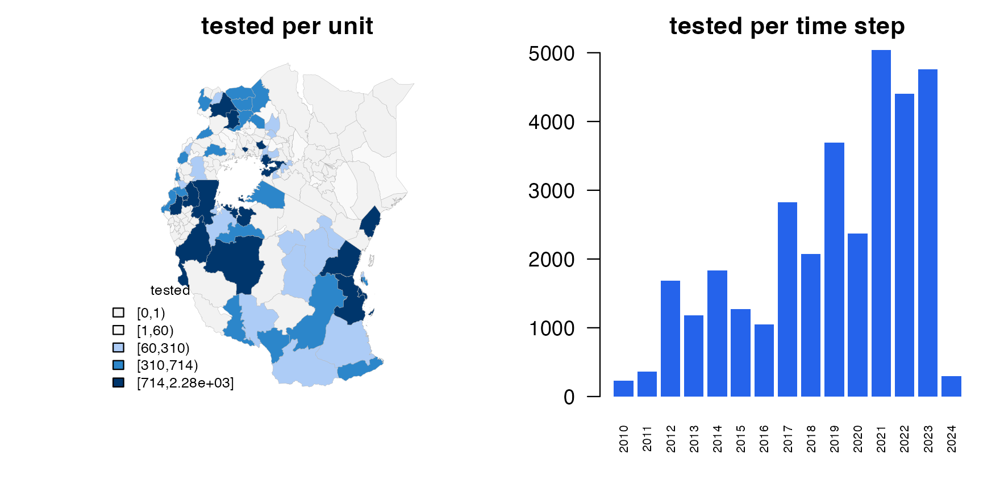
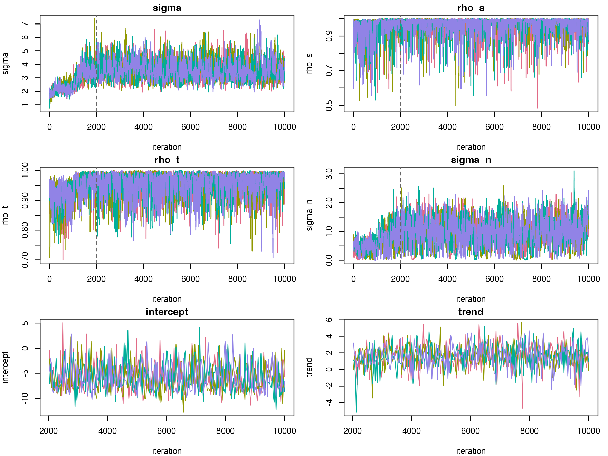
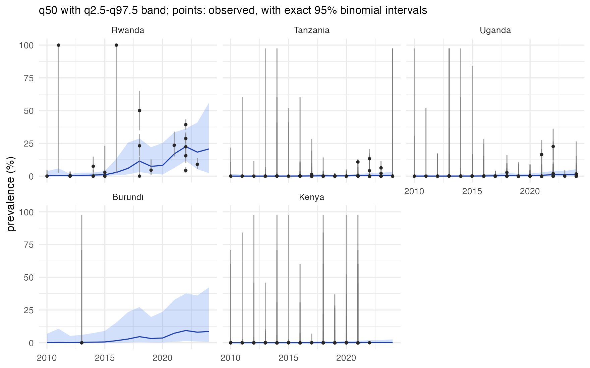
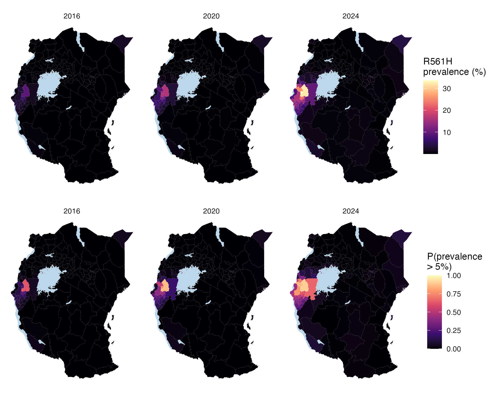

2. Rare and emerging markers: k13 R561H in East Africa
Source:vignettes/articles/k13-561h.Rmd
k13-561h.RmdThe kelch13 R561H mutation confers artemisinin partial resistance. In the data used here it appears first in Rwanda, and later in north-western Tanzania and south-western Uganda. A marker like this differs from crt K76T in tutorial 1 in three ways:
- most surveys find nothing, so the data are mostly zeros;
- the signal is local and recent: a few areas, in the last decade;
- the questions are about thresholds: where is prevalence probably above a level that matters for policy?
This tutorial maps R561H across five countries around Lake Victoria: Rwanda, Burundi, Tanzania, Uganda and Kenya. It moves quickly through the steps of tutorial 1 and dwells on what changes.
1. The data
The same STAVE object as in tutorial 1, and the prevalence of R561H:
url <- paste0("https://github.com/IDEELResearch/scrub/raw/2d85d021efe1c93dc55300610d944c9fbaf4af1a/",
"analysis/data-out/stave_data_2026.03.17.rds")
tmp <- tempfile(fileext = ".rds")
download.file(url, tmp, mode = "wb", quiet = TRUE)
stave <- suppressWarnings(readRDS(tmp))
p <- stave$get_prevalence("k13:561:H")
p <- p[p$denominator > 0, ]Most surveys find no R561H. Those zeros are what tell the model where
the mutation is absent, so they must be kept.
get_prevalence() keeps them: it counts every survey that
genotyped codon 561.
The frame is the first-level units of the five countries, from GADM, with the large lakes cut out as in tutorial 1, here in an equal-area projection centred on Lake Victoria. The surveys are selected by location, as in tutorial 1:
adm1 <- sf::st_as_sf(geodata::gadm(c("RWA", "BDI", "TZA", "UGA", "KEN"), level = 1, path = tempdir(),
version = "4.1", resolution = 2))
lakes <- rnaturalearth::ne_download(scale = 10, type = "lakes", category = "physical",
returnclass = "sf", destdir = tempdir())
crs <- "+proj=laea +lat_0=-3 +lon_0=34 +units=m"
adm1 <- sf::st_make_valid(sf::st_transform(adm1, crs))
lakes <- sf::st_make_valid(sf::st_transform(lakes, crs))
lakes <- lakes[as.numeric(sf::st_area(lakes)) > 1e9, ]
water <- sf::st_intersection(sf::st_union(lakes), sf::st_union(adm1))
adm1 <- sf::st_difference(adm1, water)
adm1 <- adm1[adm1$ENGTYPE_1 != "Water body", ] # what is left of Uganda's lake units
fr <- areal_frame(adm1, id = "GID_1", groups = c(country = "COUNTRY"), link_within = "country",
verbose = FALSE)
pts <- sf::st_transform(sf::st_as_sf(p, coords = c("longitude", "latitude"), crs = 4326), fr$crs_planar)
surveys <- p[lengths(sf::st_is_within_distance(pts, adm1, dist = 10000)) > 0, ]Yearly steps from 2010. A rare marker has few positive surveys, and a year pools them into better-informed cells; the emergence unfolds over years, not months.
tf <- time_frame(2010, 2024, "year")
d <- areal_data(surveys, fr, tf, y = "numerator", k = "denominator",
coords = c("longitude", "latitude"), date = "collection_day")
#> 1591 of 1637 surveys used, pooled into 311 cells (print the result for the exclusions)
d
#> <stareal_data> 1,591 of 1,637 surveys used, pooled into 311 cells
#> 75 of 156 units and 15 of 15 time steps have data (13.29% of the 2,340 area-time cells)
#> tested per cell: median 71, range 1-1,033; total 33,079 tested, 820 positive
#> 12 surveys snapped to the nearest unit (max 9.1 km)
#> excluded:
#> 46 outside time windowBy country, from the units the surveys fall in:
used <- d$surveys[is.na(d$surveys$.excluded), ]
country <- fr$groups$country[match(used$.id, fr$ids)]
tab <- data.frame(surveys = c(table(country)),
with_R561H = c(tapply(used$numerator > 0, country, sum)),
positive = c(tapply(used$numerator, country, sum)),
tested = c(tapply(used$denominator, country, sum)))
tab
#> surveys with_R561H positive tested
#> Burundi 4 0 0 4
#> Kenya 93 0 0 5223
#> Rwanda 114 85 577 4099
#> Tanzania 1181 24 216 14871
#> Uganda 199 6 27 8882
plot(d)
Rwanda has few of the surveys but most of the R561H: it was found in 85 of Rwanda’s 114 surveys. Tanzania has by far the most surveys, and finds R561H in 24. Uganda finds it in 6 and Kenya in none. Burundi has only 4 people tested, all in 2013.
2. Fitting
A first fit with the defaults:
pilot <- fit_areal(d)
diagnose(pilot)$checks
#> check value threshold direction pass
#> 1 theta R-hat (max) 1.044571 1.05 <= TRUE
#> 2 beta R-hat (max) 1.000881 1.05 <= TRUE
#> 3 latent R-hat (max) 1.019940 1.05 <= TRUE
#> 4 theta bulk ESS (min) 130.299220 400.00 >= FALSE
#> 5 beta bulk ESS (min) 560.638339 400.00 >= TRUE
#> 6 latent bulk ESS (median) 513.450082 100.00 >= TRUEIt fails: the hyperparameters’ effective sample size is well below 400. Mostly-zero data say little about each cell, and the hyperparameters mix slowly. The remedy is a longer run, here more than three times the default length:
fit <- fit_areal(d, control = list(n_iter = 10000, n_burn = 2000))
diagnose(fit)$checks
#> check value threshold direction pass
#> 1 theta R-hat (max) 1.004204 1.05 <= TRUE
#> 2 beta R-hat (max) 1.001666 1.05 <= TRUE
#> 3 latent R-hat (max) 1.008650 1.05 <= TRUE
#> 4 theta bulk ESS (min) 549.766531 400.00 >= TRUE
#> 5 beta bulk ESS (min) 813.636127 400.00 >= TRUE
#> 6 latent bulk ESS (median) 932.065563 100.00 >= TRUE
summary(fit)
#> <stareal_fit summary> 311 observed cells; 4 chains, 8000 iterations after burn-in
#> hyperparameters from the trace (32000 draws), fixed effects from the 1000 stored draws
#>
#> variable mean sd q2.5 q50 q97.5 rhat ess_bulk ess_tail
#> sigma 3.620 0.6720 2.5000 3.560 5.100 1.003 875 1336
#> rho_s 0.969 0.0429 0.8510 0.986 0.999 1.003 1778 3113
#> rho_t 0.959 0.0347 0.8700 0.967 0.998 1.002 923 854
#> sigma_n 0.972 0.4550 0.0961 1.000 1.830 1.004 550 602
#> intercept -5.800 2.8300 -10.0000 -6.380 0.544 1.000 866 906
#> trend 1.610 1.3600 -1.3300 1.640 4.140 1.002 814 927
#>
#> acceptance after burn-in: centred 0.18, surrogate 0.21; 0.0118 s per iteration
#> for every observed cell and a verdict, use diagnose()
plot(fit)
The longer run passes every check. Compared with crt K76T:
- The
interceptis the logit prevalence in the middle of the window (2017), before the field: about -5.8, or 0.3%. That is the regional baseline: the mutation is absent from most of the region. - The
trendis positive but uncertain: its interval runs from -1.3 to 4.1. The rise is local, in and around Rwanda, so the field carries it rather than a trend for the whole region. -
sigmais large. The field has to carry a local emergence: tens of percent in a few units, against near zero in most. -
sigma_nis large too. Unit-years depart from the smooth field by more than it can explain: neighbouring units, or one unit in consecutive years, can differ sharply.
3. Where has R561H spread?
The probability that prevalence exceeds 5% is asked for with
exceedance:
pr <- predict(fit, groups = "country", exceedance = 5)Country trends, with the surveys and their exact binomial intervals:

subset(pr$groups$country, time %in% c("2016", "2020", "2024"),
select = c(id, time, mean, q50, q2.5, q97.5, p_gt_5))
#> id time mean q50 q2.5 q97.5 p_gt_5
#> 7 Burundi 2016 3.19260214 1.601201681 0.1043682752 15.4664733 0.196
#> 11 Burundi 2020 5.83074902 3.644803296 0.2309945257 23.6836101 0.400
#> 15 Burundi 2024 12.39698838 8.645963297 0.5721374073 42.2599464 0.688
#> 22 Kenya 2016 0.06954643 0.009204901 0.0003075997 0.6911028 0.000
#> 26 Kenya 2020 0.11371087 0.019572104 0.0005814578 1.2363485 0.000
#> 30 Kenya 2024 0.38161310 0.102154970 0.0027721661 2.5796236 0.006
#> 37 Rwanda 2016 3.88210348 2.828306238 0.6311529754 13.2366764 0.234
#> 41 Rwanda 2020 9.51357452 8.172432201 1.1962932219 25.2979897 0.749
#> 45 Rwanda 2024 23.06001533 20.733194215 2.2885733267 55.9621061 0.917
#> 52 Tanzania 2016 0.14298451 0.063021593 0.0081462818 0.7549538 0.000
#> 56 Tanzania 2020 0.25019933 0.162824406 0.0210906257 1.0291724 0.000
#> 60 Tanzania 2024 0.88564742 0.582105399 0.0794008100 3.3416102 0.010
#> 67 Uganda 2016 0.21005359 0.100982984 0.0142825687 1.1925967 0.000
#> 71 Uganda 2020 0.44504366 0.275035790 0.0308965064 1.9133964 0.000
#> 75 Uganda 2024 1.60333216 1.167498635 0.1425033964 5.3147529 0.035Maps of the posterior mean, and of the probability that prevalence exceeds 5%, with the lakes drawn as water:
m <- do.call(rbind, lapply(c("2016", "2020", "2024"), function(y) sf::st_as_sf(pr, time = y)))
lake <- geom_sf(data = sf::st_sf(water), fill = "#bcd6ea", colour = NA)
g1 <- ggplot(m) + geom_sf(aes(fill = mean), colour = NA) + lake + facet_wrap(~time) +
scale_fill_viridis_c("R561H\nprevalence (%)", option = "magma") + theme_void()
g2 <- ggplot(m) + geom_sf(aes(fill = p_gt_5), colour = NA) + lake + facet_wrap(~time) +
scale_fill_viridis_c("P(prevalence\n> 5%)", limits = c(0, 1), option = "magma") + theme_void()
patchwork::wrap_plots(g1, g2, ncol = 1)
In 2016 the probability of exceeding 5% is moderate at most, in Rwanda. By 2020 it is high across much of Rwanda. By 2024 it reaches across the borders, into north-western Tanzania, south-western Uganda and northern Burundi.
Which units are more likely than not above 5% in 2024, and what data stand behind each?
hot <- subset(pr$area, time == "2024" & p_gt_5 > 0.5)
hot$name <- adm1$NAME_1[match(hot$id, adm1$GID_1)]
hot$tested <- tapply(pr$area$k, pr$area$id, sum)[hot$id] # over all years
hot$positive <- tapply(pr$area$y, pr$area$id, sum)[hot$id]
hot <- hot[order(-hot$p_gt_5), ]
hot[, c("name", "country", "mean", "q2.5", "q97.5", "p_gt_5", "tested", "positive")]
#> name country mean q2.5 q97.5 p_gt_5 tested
#> 45 Iburasirazuba Rwanda 31.989402 1.91191200 80.72316 0.900 1077
#> 75 Umujyi wa Kigali Rwanda 33.622484 1.12008879 87.05440 0.896 1016
#> 15 Amajyaruguru Rwanda 25.265308 1.00150174 77.20634 0.851 564
#> 30 Amajyepfo Rwanda 16.218159 0.99667205 55.16197 0.780 900
#> 975 Kabale Uganda 15.417508 0.59382306 61.85804 0.709 236
#> 420 Kagera Tanzania 9.895555 0.67032644 38.32712 0.662 2285
#> 225 Kirundo Burundi 22.880557 0.14521316 89.26553 0.630 0
#> 270 Muyinga Burundi 15.606969 0.11914268 76.45788 0.552 0
#> 1185 Kisoro Uganda 17.054202 0.02495561 87.41720 0.520 1
#> 300 Ngozi Burundi 15.377510 0.08636639 82.67591 0.518 0
#> positive
#> 45 84
#> 75 267
#> 15 162
#> 30 47
#> 975 23
#> 420 203
#> 225 0
#> 270 0
#> 1185 0
#> 300 0The table says two different things:
- Some rest on data, with a hundred or more tested: Iburasirazuba, Umujyi wa Kigali, Amajyaruguru, Amajyepfo, Kabale, Kagera. These are Rwanda’s provinces, and the units across its borders where R561H has been found.
- Some have no surveys at all: Kirundo, Muyinga, Ngozi. Their probabilities come from their neighbours.
With a rare marker, a map of the mean or of an exceedance probability shows where the model cannot rule the marker out as much as where it is. Read it with the map of the data and the intervals.
4. What the model assumes, and when to doubt the map
- Neighbours fill the gaps. The field is smooth in space, so a unit with no surveys borrows from those around it. Burundi lies between Rwanda and Kagera, and has 4 people tested, all in 2013. Its mean reaches 12% by 2024, with an interval from 0.6% to 42%. That is not a finding about Burundi. It says that its neighbours’ data cannot rule R561H out there.
-
One variance for the whole region. The field is
stationary: the same
sigma,rho_sandrho_tin every area and year. An emergence is a local, growing departure, and the model accommodates it with a largesigma. That variance then applies everywhere, which is why unsurveyed units have such wide intervals. - After the last survey. Rwanda’s surveys stop in 2023 in these data, so 2024 there is extrapolated, and its interval widens.
- Where the surveys were made. Studies of an emerging marker are often sited where resistance is suspected, for example after treatment failures. The model assumes that survey locations tell it nothing about prevalence. If studies chase the mutation, the surveyed units overstate their neighbours.
- A zero is worth its sample size. 0 of 50 is not unusual when prevalence is 5%: it happens 8% of the time. The long grey bars in the country plot are surveys of one or a few infections: they say almost nothing. The binomial likelihood weighs each zero by its denominator, but many small zeros do not prove absence.
What next
- 3. Covariates: explaining variation with data on the areas and the time steps.
- Method: how the sampler copes with mostly-zero data.